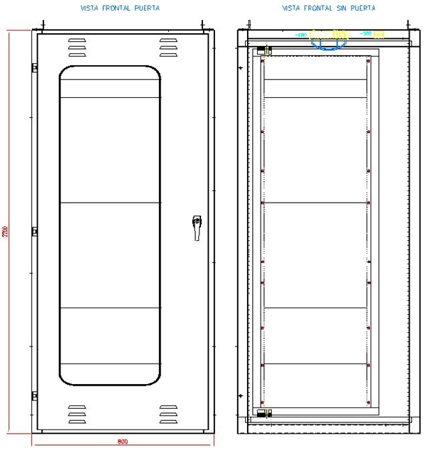
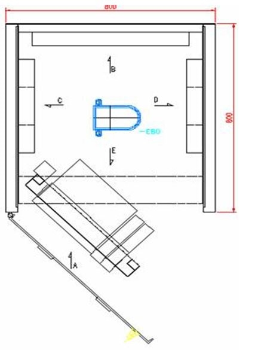
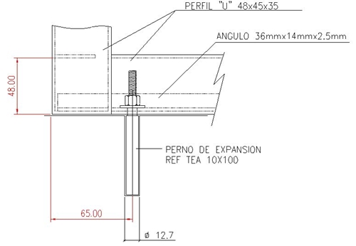

Siempre es más fácil conocer las normas ENEL-CODENSA
Rolex Rolex gold watch, compared with ordinary materials, gold watches are often expensive, but the replica rolex gold watch has the role of swiss replica watches hedging, so that it often becomes the first choice for collectors. The gold watch has value in the world, largely because the omega replica watch brand launched a commemorative limited edition watch or a replica hublot complex movement process or artistic attainments deep watches, mostly preferred gold precious metals such material. These watches tend to have a strong hedging function, therefore, Rolex Rolex gold watch reputation.

ET-AT917 Tablero de control y proteccion
Datos adicionales
Número de especificación
ET-AT 917
Fecha de vigencia
20/12/2023
Herramientas adicionales
- Contenido Ocultar
- 1 OBJETO
- 2 ALCANCE
- 3 CONDICIONES DE SERVICIO
- 3.1 CONDICIONES AMBIENTALES
- 3.2 CONDICIONES DE SERVICIO
- 4 SISTEMAS DE UNIDADES
- 5 NORMAS RELACIONADAS
- 6 REQUISITOS TÉCNICOS PARTICULARES
- 6.1 MATERIALES
- 6.2 PROCESO DE PINTURA
- 6.3 RESISTENCIA A LA CORROSIÓN
- 6.4 PUERTAS
- 6.5 PISOS
- 6.6 GRADO DE PROTECCIÓN
- 6.7 ESTRUCTURA
- 6.8 MEMORIAS DE CALCULO
- 6.9 VENTILACIÓN FORZADA
- 7 DIMENSIONES Y ACCESORIOS
- 7.1 BARRA DE TIERRA
- 7.2 MCB Protección Eléctrica
- 8 CABLEADO
- 9. BORNERAS
- 9.1 Sistema de conexión.
- 9.2 Seccionable con cuchilla.
- 9.3 Borneras de Control y protección:
- 9.4 Borneras de Tensión:
- 9.5 Borneras de Corriente:
- 9.6 Materiales de construcción.
- 10. Tableros de Comunicaciones
- 10.1 Accesorios Patch Panel y ODF
- 10.2 Tableros de comunicaciones en subestaciones Digitales
- 11. MARCACIÓN
- 12. PRUEBAS
- 12.1 PRUEBAS TIPO
- 12.2 PRUEBAS DE RECEPCIÓN
- 13. DESPACHO Y TRANSPORTE
- 14. REQUISITOS PARA LAS OFERTAS
- 15. GARANTÍAS
1 OBJETO
Esta [glosario:especificación técnica] establece las características y requisitos técnicos que se deben cumplir y los ensayos a los cuales deben ser sometidos los Tableros de Control y Protección, Medida y Comunicaciones para uso interior a ser utilizados en subestaciones eléctricas de alta y [glosario:media tensión].2 ALCANCE
Esta especificación aplica para todas los Tableros de Control y Protección, Medida y Comunicaciones de este tipo que sean instalados en el sistema de distribución de ENEL Colombia.3 CONDICIONES DE SERVICIO
3.1 CONDICIONES AMBIENTALES
Los Tableros de Control y Protección, Medida y Comunicaciones se instalarán bajo las siguientes condiciones:
| CARACTERÍSTICAS AMBIENTALES | |
| a. Altura sobre el nivel del mar | 600 a 2 900 m |
| b. Ambiente | Tropical |
| c. Humedad | Mayor al 90 % |
| d. Temperatura máxima y mínima | 40 ºC y - 5 ºC respectivamente. |
| e. Nivel de Polución (IEC 60815) | Heavy |
| f. Seismic Req | 0,5 g |
| g. Frecuencia de red | 60 Hz |
| h. Corrosivity (ISO 12944) | C4 |
3.2 CONDICIONES DE SERVICIO
El tablero debe estar diseñado para uso interior dentro de las casas de control de las subestaciones AT/MT de ENEL Colombia.4 SISTEMAS DE UNIDADES
En todos los documentos técnicos se deben expresar las cantidades numéricas en unidades del sistema Internacional. Si se usan catálogos, folletos o planos, en sistemas diferentes de unidades, deben hacerse las conversiones respectivas.5 NORMAS RELACIONADAS
Los Tableros de Control y Protección, Medida y Comunicaciones deberán cumplir con las normas relacionadas a continuación:| NORMA | DESCRIPCIÓN | |
| ASTM | B 117-97 | Standard practice for operating salt spray (fog) apparatus |
| NTC | 3279 | Grado de protección dado a los encerramientos. (Código IP) IEC 529. |
| ASTM | D14000 | Espesor mínimo de pintura |
| ASTM | D 4541 | Standard Test Method for Pull-Off Strength of Coatings Using Portable Adhesion Testers |
| IEC | 61439-1 | IEC 61439-1 "‘Low-voltage switchgear and controlgear assemblies. |
| NFPA | NFPA070E | ‘Standard for Electrical Safety in the Workplace. |
| IEC | IEC 62262 | Degrees of protection provided by enclosures for electrical equipment against external mechanical impacts (IK code) |
| IEC | IEC 60890 | A method of temperature-rise verification of low-voltage switchgear and controlgear assemblies by calculation. |
| IEC | IEC 60947-2 | Low-voltage switchgear and controlgear - Part 2: Circuit-breakers |
6 REQUISITOS TÉCNICOS PARTICULARES
6.1 MATERIALES
El tablero de Control y Protección deberá ser construido en lámina de acero Cold Rolled ASTM A36, para estructura y rack basculante en calibre 12 (2.5 mm), para demás elementos como tapas laterales y posteriores, bandejas de equipos, tapa superior y piso, puerta, en calibre 14 BWG (2 mm), como mínimo.
Todos los tornillos, tuercas, arandelas, arandelas tipo helicoidal, bisagras, etc, utilizados, deberán ser galvanizados o en acero inoxidable.
6.2 PROCESO DE PINTURA
La lámina de acero utilizada en la construcción de los tableros de Control y Protección, medida y comunicaciones deberán someterse a un proceso de limpieza, desengrase y fosfatizado, el cual debe garantizar que las superficies estén libres de grasas, óxidos o cualquier elemento extraño que disminuyan la adherencia (son válidos procesos químicos y/o mecánicos); en un tiempo no mayor a dos horas, después de la limpieza debe aplicarse una capa de imprímante no mayor a 20 micras y en un lapso no menor a 8 ni mayor a 16 horas (o según recomendación de fabricante de pintura) se debe aplicar una pintura epóxica, color RAL 7032, resistente a los rayos ultravioleta y la intemperie, con espesor no menor a 50 micras (para un total de 70-90 micras), que deberá ser horneada. El proceso debe garantizar las características de “tropicalización”.
El espesor de pintura debe medirse con un medidor de espesores debidamente calibrado según la norma ASTM D 14000 y el espesor mínimo debe estar de acuerdo con el numeral 6.3
Para la medición de los espesores de recubrimiento se deben tener en cuenta las siguientes definiciones:
a. Lectura del espesor: Medida que muestra el medidor de espesores, al colocar una vez el sensor sobre la pieza a medir.
b. Medida del espesor: Promedios de 3 lecturas de espesor tomadas a una distancia aproximada de 2,5 cm.
En pinturas horneables que garanticen la adherencia y espesores mínimos no requerirán imprimante.
Cada capa de pintura debe garantizar una adherencia mínima de 400 PSI (libras/pulgada2) probada según norma NTC 3916 (ASTM D 4541 de 1995)
6.3 RESISTENCIA A LA CORROSIÓN
Las muestras deben ser nuevas y libres de grasa, aceite, polvo y otras impurezas. Para verificar la resistencia a la corrosión a dichas muestras se les hacen dos incisiones, de 0.5mm de espesor, en forma de cruz que llegue hasta el substrato.El ensayo de corrosión se realizará de acuerdo con la norma ASTM B 117 (Prueba de Cámara Salina) bajo las siguientes condiciones: Temperatura= 35°C, ph= 6,5-7,2 y concentración de cloruro de sodio al 5% durante 400 horas. Tiempo al que se verificará:
a. La progresión de la corrosión en la incisión debe ser inferior a 2mm.
b. No deben presentar trazas de corrosión ni burbujas.
c. El recubrimiento debe permanecer adherido a la capa de pintura conservando su color.
6.4 PUERTAS
Las puertas del tablero se deberán construir en lámina Cold Rolled ASTM A36 Calibre 14 (2 mm). Todas las puertas deberán abrir únicamente en sentido lateral hasta 120° respecto a la sección horizontal superior del tablero, poseer una manija que facilite su accionamiento y las bisagras deberán ser fabricadas en acero inoxidable, suficientemente fuertes para asegurar rígidamente la puerta de la estructura.Los pasadores de las bisagras deberán ser de acero inoxidable. Las bisagras deben estar instaladas internamente.
El tablero consta de dos puertas, una interna y otra externa. La interna está destinada a la ubicación de los equipos y la externa debe contar con un vidrio templado espesor mínimo de 6 mm de alta durabilidad para visualización de los equipos desde fuera del tablero sin necesidad de abrir la puerta.
Debe contarse con guías para [glosario:limitador] de apertura.
La cerradura debe ser tipo bombín de 3 puntos de cierre.
El tablero debe entregarse con dos llaves maestras.
La apertura de las puertas no debe tener ningún tipo de restricción por interferencias en su apertura con los tableros que se instalan contiguos u otro sistema que haga parte de la subestación.
Se debe garantizar un sistema que mantenga el abatible interno abierto, cuando se requiera.
6.5 PISOS
Los gabinetes deben ser diseñados de forma tal que evite el deterioro, daños y/o deformación de los multiconductores que ingresan por la parte inferior, por esta razón debe implementar una solución que permitala protección del cableado. Los pisos del tablero y sus soportes de entrada de cable multiconductor debe estar en capacidad de soportar el peso de una persona promedio sin causar ningún tipo de deformación de los materiales utilizados.
6.6 GRADO DE PROTECCIÓN
El grado de protección que deberá tener la envolvente exterior de los Tablero de Control,Protección, Medida y Comunicaciones deberá ser como mínimo un grado de protección IP 42 según la norma IEC 60529.
El empaque debe ser inyectado para garantizar grado de protección.
Grado de protección contra impactos mecánicos externos IK 8.
6.7 ESTRUCTURA
Tipo de estructura, auto soportado, construidos de manera individual, no se aceptan tableros que compartan estructuras ni adosados.
La construcción estructural del tablero será de responsabilidad del fabricante el cual podrá elegir el sistema más conveniente, podrá ser en lámina doblada o perfiles angulares, siempre y cuando de la seguridad especifica.
La estructura, envolventes y techo debe estar construida con perfiles estructurales de lámina Cold Rolled ASTM A36 calibre 12 (2.5 mm). El piso se debe construir en calibre 14 (2 mm) con lámina de aluminio para ser perforada para la correspondiente entrada/salida de cables.
El ingreso de cables es por la parte inferior con uso de prensa estopas instalados en las láminas del piso del tablero, deben instalarse accesorios que permitan la sujeción y el adecuado figurado para el ingreso del cable multiconductor
El gabinete debe estar montado en una base sobre perfil en U fabricado en lamina Cold Rolled calibre 14 (2 mm) y deberá contar con los puntos para el anclaje según se especifica en el Anexo 3.
Debe incluir un Rack Basculante de 19" fabricado en lamina Cal 12 (2.5 mm) con 42 unidades de rack, el Rack incluye manijas que permitan el adecuado cierre.
La tornillería, tuercas, arandelas de presión y arandelas planas que fijan la estructura deberán ser galvanizadas o en acero inoxidable y los tornillos deberán tener una longitud tal que sobresalgan de la tuerca por lo menos 3 hilos sin exceder de 10 mm.
Debe contar con canaletas para separación para Fibra óptica y Cables de control/alimentaciones, las canaletas deben tener división física para albergar la fibra óptica de manera independiente. Adicionalmente se debe proteger la fibra entre pases de las canaletas a los equipos con espiral apta según la cantidad de fibras a proteger. Las fijaciones se deben realizar con cinta velcro.
La estructura debe contar con un sistema de Izaje mediante orejas en la parte superior.
Las láminas y puertas deben ser desmontables.
Para tableros de control y protección se deben incluir dos secciones para tener dos tableros dentro de la misma estructura (aplica para subestaciones Digitales), cada uno con rack basculante y puerta de vidrio independientes con sus accesorios respectivos (chapa, brazo hidráulico, soporte de apertura, y servicios auxiliares: higrostato, resistencia de calefacción, iluminación, switch de puerta, entre otros), descrito en el anexo 2.
6.8 MEMORIAS DE CALCULO
Se debe realizar la entrega de la memoria con el análisis de [glosario:arco eléctrico] para cada gabinete tipo,donde determina la energía radiante y así mismo se establecen las distancias de seguridad y sus respectivos elementos de protección personal, adicionalmente deberá certificar el gabinete con el cumplimiento de este
requerimiento de acuerdo con las publicaciones IEEE 1584 ((Guide for Performing Arc Flash Hazard Calculations.)) y NFPA070E ((Standard for Electrical Safety in the Workplace.))
Se debe realizar la entrega de la memoria de disipación térmica alineada a la normatividad IEC TR 60890:2022
A method of temperature-rise verification of low-voltage switchgear and controlgear assemblies by calculation considerando una filosofía de operación N-1 de los componentes que hacen parte del sistema, lo anterior por tipo de tablero que se requiera en la instalación. Para la consideración de los cálculos de disipación térmica, los IEDs deben considerarse al 85% de la temperatura máxima de operación según el fabricante.
6.9 VENTILACIÓN FORZADA
Para el caso de Tableros de Control y Protección la ventilación aplicará, si en la consideración de la memoria se requiere. Para el caso de los Tableros de Comunicaciones (IHM, MetroLAN, Red LAN A, Red LAN B, entre otros) se exige la ventilación forzada para extracción de aire caliente, lo que no exime presentar la memoria de disipación térmica que soporte el dimensionamiento del sistema de ventilación. Los elementos del sistema de ventilación forzada deberán ser cableados a bornes de control para la señalización de fallas en los diferentes niveles del sistema de control.En cuanto al diseño metalmecánico se deben contemplar una malla o lamina perforada que no permita el ingreso de animales o insectos al interior del tablero. Todos los elementos que hacen parte del sistema de ventilación forzada deben tener el mismo grado de protección IP solicitado para el gabinete.
7 DIMENSIONES Y ACCESORIOS
Las dimensiones y esquema del tablero se indican en los Anexos 2 y 3 de la presente especificación.El gabinete debe tener una resistencia calefactora para evitar condensación, controlada por higróstato, al igual que un circuito para iluminación interna, controlado por un suiche accionado con la apertura o cierre de la puerta interna. La iluminación, tomacorriente, la calefacción deben tener su interruptor de protección debidamente dimensionado.
El higrostato debe sensar en tiempo real medición de humedad y temperatura de operación con display para visualización, con contactos libres de potencial para indicar falla, o alarma según se ajuste.
El tablero debe permitir la instalación de riel tipo OMEGA para la ubicación de borneras, mini interruptores y demás accesorios en las dos caras laterales internas.
En su interior debe tener una toma monofásica, se recomienda que la toma sea instalada sobre la puerta interna en la parte inferior al costado opuesto de las bisagras, la toma debe ser doble monofásica con polo a tierra de 15A -120VAC.
Se debe incluir un sistema de detección de detección de humo.
Se debe incluir en cada gabinete un portaplanos.
7.1 BARRA DE TIERRA
El tablero debe incluir en su parte inferior una barra de tierra en cobre desnudo de mínimo 35 mm2 para aterrizamiento del tablero, pantallas de los cables y equipos instalados.Todas las partes metálicas del tablero deben ser conectadas a tierra, se debe aterrizar que la puerta y el marco basculante se aterrice utilizando trenza flexible dimensionada para la corriente adecuada.
Para el caso de los equipos se acepta con cable multiconductor color verde con terminal de ojo.
7.2 MCB Protección Eléctrica
Las protecciones eléctricas al interior del gabinete MCB deben ser para aplicaciones industriales definidas en el estándar IEC 60947-2 “Low-voltage switchgear and controlgear - Part 2: Circuit-breakers”, estas protecciones deben ser calculadas de acuerdo con los equipos presentes en el tablero con el fin de determinar el correcto dimensionamiento de los mismos, soportado por un estudio de coordinación de cargas, al igual que una adecuada selección de curvas de protección, no se acepta el uso de curvas tipo C o aplicaciones domésticas.8 CABLEADO
El cableado interno debe permitir el fácil acceso e intervención para labores de mantenimiento. Los gabinetes deben ser completamente cableados, los cables para conexiones a otros tableros deben llevarse a borneras. EL cableado debe ser técnicamente desarrollado, no se aceptan empalmes
El cableado interno debe ser tipo flexible (mínimo clase 5 según norma IEC 60228), con aislamiento de 600 VAC, tipo SIS.
No se permite puntos de bornera o puntos de conexión de equipos con más de un cable conectado, este último puede llegar a ser validado y aprobado por ENEL durante el proceso de Ingeniería.
Todos los puntos de reserva de IEDs deben estar cableados a bornera
La marcación del cable se debe realizar en los dos extremos y debe ser origen-destino.
Los cables que van desde la puerta hacia la bandeja deben tener el grueso suficiente que permita un cierre suave de la puerta sin generar esfuerzos mecánicos adicionales a las bisagras.
El diseño y ejecución del cableado del gabinete de control y protección debe cumplir con los requisitos de la última versión del [GLOSARIO:REGLAMENTO TÉCNICO] DE INSTALACIONES ELÉCTRICAS (RETIE).
Los alambres y cables, aislados o desnudos, utilizados como conductores eléctricos, sistemas de control y [glosario:puesta a tierra], deberán cumplir con los requisitos establecidos en el RETIE 20.2; HILOS Y CABLES PARA USO ELÉCTRICO y demostrarlo mediante un [glosario:certificado de conformidad] del Producto.
El color de los conductores para el cableado interno debe estar acorde a la siguiente tabla.
| Ítem | Description | Insulation. color |
| 1 | Secondary current circuits | RED |
| 2 | Secondary voltage circuits | BLUE |
| 3 | AC (auxiliary) circuits | BLACK |
| 4 | Earth conductors | GREEN-YELLOW |
| 5 | Alarm and signaling circuits | WHITE |
| 6 | Control circuits and others | GRAY |
9. BORNERAS
Cada gabinete debe suministrarse con borneras de corriente para los secundarios de los transformadores de corriente, de tal manera que se puedan conectar en cortocircuito antes de su apertura, el cortocircuito debe ser visible y contar con los dispositivos apropiados para las pruebas. Deben tener también borneras para agrupar las señales de tensión y señalización provenientes de los transformadores de tensión. Los bornes deben ser apropiados para cable con la sección transversal indicada.Las borneras, terminales y marquillas deben ser aprobadas por ENEL. Se deben dejar como mínimo un 20% de puntos de bornera libres como reserva.
9.1 Sistema de conexión.
Solo se aceptarán borneras con conexión por resorte tipo Cage Clamp, que sean:• Libres de reapriete
• Inmunidad a vibración hasta 2000 Hz en ejes X, Y, Z
• Acceso frontal y rápida conexión con respecto a otros sistemas.
El Sistema Cage Clamp, deben soportar los fenómenos de corrosión para evitar puntos calientes que deriven en fallas indeseadas.
Se deberán incluir todo el conjunto de pruebas de laboratorio (Presión de contacto, vibraciones, conductividad, cortocircuito, resistencia a la corrosión, entre otros)
9.2 Seccionable con cuchilla.
Las borneras usadas en los circuitos de corriente y tensión deben ser de las mismas características en todo el camino del circuito. Los circuitos de tensión y corriente asociados a los núcleos de medida deberán permitir realizar pruebas al sistema de control sin afectar las magnitudes asociadas a los equipos de medida.
En todo caso, previo al inicio del proceso de ensamble en fabrica, se deberá presentar para aprobación de ENEL una muestra de cada tipo de bornera de acuerdo con la clasificación arriba mencionada y que se utilizara en cada uno de los tableros objeto del suministro.
Finalmente se deberá cumplir con los siguientes requerimientos para cada uno de los tipos de bornera.
Borneras de seccionamiento para PT’s. Seccionamiento mediante 1 disco giratorio. Puntos de prueba en ambos lados. Hasta 2 puntos independientes en el lado de la carga. Siempre con conexión de resorte.
9.3 Borneras de Control y protección:
Deberán ser de color gris que permitan la conexión de conectores de prueba. Deberán ser en su totalidad del tipo seccionable con cuchilla o fija dependiendo de la aplicación.
Borneras de: Control y fuerza, borneras de tierra, portafusiles con y sin indicación de falla, seccionables 2 y 3 pisos para uso en riel omega, podrán demandarse. Siempre con conexión de resorte.
Borneras de seccionamiento para PT’s. Seccionamiento mediante 1 disco giratorio. Puntos de prueba en ambos lados. Hasta 2 puntos independientes en el lado de la carga. Siempre con conexión de resorte.
9.4 Borneras de Tensión:
Deberán ser de color gris del tipo seccionable que permitan la conexión de conectores de prueba.
Borneras de seccionamiento para PT’s. Seccionamiento mediante 1 disco giratorio. Puntos de prueba en ambos lados. Hasta 2 puntos independientes en el lado de la carga. Siempre con conexión de resorte.
9.5 Borneras de Corriente:
Se utilizarán para conexión trifásica de las señales provenientes de los transformadores de corriente y deberán ser de color gris del tipo seccionable que permitan la conexión de conectores de prueba adicionalmente contar con eslabón puenteador para cortocircuitar los circuitos de corriente antes de la apertura del circuito secundario. Los puntos de desconexión deben ser claramente visibles desde el frente.
Las borneras usadas en los circuitos de corriente y tensión deben de las mismas características en todo el camino del circuito. Los circuitos de tensión y corrientes asociados a los núcleos de medida deberán permitir realizar pruebas al sistema de control y protección sin afectar las magnitudes asociadas a los equipos de medida.
Borneras de corto circuito para CT’s. Cortocircuito básicamente logrado mediante 1 disco giratorio. Puntos de prueba en ambos lados. Hasta 2 puntos independientes en el lado de la carga. Siempre con conexión de resorte.
9.6 Materiales de construcción.
Todas las borneras o regletas deberán ser fabricadas en Nylon PA6.6 (Poliamida VO), auto extinguible, libre de halógenos, inmune a la mayoría de los solventes industriales, termitas.El resorte cage clamp deberá ser de acero inoxidable y la barra de corriente deberá ser cobre electrolítico estañado.
El conjunto deberá ser altamente resistente a corrosión ambiental. Temperatura máxima de trabajo permanente 105 °C.”
Las borneras deben incluir todos los accesorios necesarios tales como puentes adyacentes, puentes alternos, tapas, topes y marquillas.
10. Tableros de Comunicaciones
10.1 Accesorios Patch Panel y ODF
Para los tableros de comunicaciones, se debe contar con un patch panel (Riel Din y de montaje en Rack de 19”), lo anterior que permita una adecuada presentación y organización del cableado de cobre, esto debe ser dimensionado de acuerdo con la cantidad de equipos Switches y puertos de comunicación que sean empleados, esto corresponderá al diseño detallado y deberá ser aprobado por Enel Colombia.
De la misma manera el tablero de comunicaciones debe disponer de ODF con el adecuado dimensionamiento de acuerdo con la cantidad de fibras ópticas que se encuentren en el tablero, esto debe estar alineado con el diseño detallado del tablero y deberá ser aprobado por Enel Colombia.
En tableros de comunicaciones se debe propender por la adecuada organización y protección del cableado presente, bien sea de cobre o fibra óptica por tal razón se deben incluir organizadores de cableado y correas de velcro.
10.2 Tableros de comunicaciones en subestaciones Digitales
Para subestaciones digitales, se debe contar con tableros independientes para los buses de proceso y estación, es decir, no se debe compartir infraestructura, lo anterior como criterio de confiabilidad con la independencia física para los equipos de comunicación, esto debe ser aprobado por ENEL en las etapas de ingeniería detallada.
El número de equipos instalados deberá estar limitado con los siguientes criterios:
• Se deberá reservar como mínimo un espacio de una U (unidad de rack de 19”), entre equipos dentro del gabinete, por ejemplo, entre Switch.
• La capacidad de instalación de equipos deberá estar soportada por memoria de calculo de disipación térmica y no debe superar el 70% del gabinete, se debe considerar espacio para expansión futura de 4 Unidades de rack.
11. MARCACIÓN
Todos los Tableros de Control y Protección, Medida y Comunicaciones comprendidos en este suministro deberán llevar una placa de acero inoxidable, con textos en idioma español, conteniendo la siguiente información:- Características generales del gabinete.
- Número de orden de compra
- Nombre del fabricante
Al momento de la entrega el tablero debe ir debidamente marcado en su empaque con el número de la orden de compra y la S/E destino.
12. PRUEBAS
12.1 PRUEBAS TIPO
El fabricante de los Tableros de Control y Protección deberá realizar las siguientes pruebas tipo:• Se efectuarán pruebas de adherencia de acuerdo con la norma NTC 3916 (ASTM D4541 de 1995).
• Se efectuarán pruebas de resistencia a la corrosión de acuerdo con la norma ASTM B117de 1997).
• Se realizarán pruebas del espesor de las capas de fosfatizado y acabado final de acuerdo con lo especificado en esta norma.
• Grado de protección IP según Norma NTC 3279.
12.2 PRUEBAS DE RECEPCIÓN
Cada una de los Tablero de Control y Protección será sometida a las siguientes pruebas:• Inspección visual
• Inspección dimensional
• Ensamblaje de los equipos y elementos complementarios.
• Medición del espesor de pintura
13. DESPACHO Y TRANSPORTE
Para el despacho y transporte, el proveedor se pondrá en contacto con el cliente para fijar todos los detalles relativos a este efecto.
El Tablero deberá estar provisto de rellenos que aseguren igualmente una buena protección, debe ir instalado sobre una estiba de madera y debidamente forrado en plástico o cartón para evitar daños durante el transporte y manipulación en bodegas. En caso de que el Tablero de Control y Protección sufra daño en las maniobras de carga y descarga en bodegas de ENEL Colombia, el proveedor se hace responsable de los daños ocasionados.
Al momento de la entrega el tablero debe ir debidamente marcado en su empaque con el número de la orden de compra y la subestación de destino.
De la misma manera, se debe realizar entrega del manual del fabricante para el manejo en transporte, y condiciones mínimas para almacenamiento temporal o permanente.
14. REQUISITOS PARA LAS OFERTAS
El Oferente deberá incluir con su propuesta, la siguiente información:
• Planilla de características técnicas garantizadas, la cual deberá ser diligenciada completamente, firmada y sellada por el oferente.
• Protocolos de pruebas de acuerdo con las normas indicadas en el numeral 9 de la presente especificación. En tales protocolos se deberán anotar las fechas de fabricación y pruebas del equipo, para permitir la verificación de las características técnicas garantizadas.
• Información adicional que considere aporta explicación a su diseño (dibujos, detalles, dimensiones y pesos de los materiales ofertados).
Enel Colombia podrá descartar ofertas que no cumplan con las anteriores disposiciones, sin expresión de causa ni obligación de compensación.
15. GARANTÍAS
El fabricante se comprometerá a establecer una garantía sobre el suministro por un período mínimo de 2 años a contar inmediatamente después de la recepción, sobre defectos de pintura y hermeticidad del gabinete.ANEXO 1. TABLA DE CARACTERÍSTICAS TÉCNICAS GARANTIZADAS
| TABLA 1 - CARACTERÍSTICAS TÉCNICAS GARANTIZADAS - Gabinete de protección y control | ||||
| Ítem | Descripción (Requerimiento) | Unidad | Requerido | Ofrecido |
| 1 | Fabricante | - | ||
| 2 | País | - | ||
| 3 | Condiciones de servicio | - | ||
| 3.1 a | Altura sobre nivel del mar | m | 600-2900 | |
| 3.1 b | Ambiente | - | Tropical | |
| 3.1 c | Humedad | % | Mayor al 90% | |
| 3.1 d | Temperatura máxima y mínima | °C | 40 °C y -5 °C respectivamente | |
| 3.1 e | Temperatura promedio | °C | 14 | |
| 4 | Normas relacionadas | |||
| 4.1 | ASTM B 117-97 | |||
| 4.2 | NTC 3279 | |||
| 4.3 | ASTM D14000 | |||
| 4.4 | ASTM D 4541 | |||
| 4.5 | IEC 61439-1 "‘Low-voltage switchgear and controlgear assemblies. | |||
| 4.6 | IEC 62262 Degrees of protection provided by enclosures for electrical equipment against external mechanical impacts (IK code) | |||
| 5 | Materiales | |||
| 5,1 | Lámina de acero Cold Rolled | ASTM A16 | ||
| 5,2 | Calibre Lámina | 12BWG (2.5 mm mínimo) 12BWG (2mm mínimo) | ||
| 5,3 | Galvanizado/ Acero inoxidable | Tornilos, tuercas, arandelas, bisagras, etc | ||
| 6 | Pintura | |||
| 6,1 | Color | RAL 7032 | ||
| 6,2 | Carácteristica de tropicalización | Si | ||
| 6,3 | Espesor | No menor a 70 micras y máx de 90 micras | ||
| 6,4 | Adherencia mínima | PSI | 400 | |
| 6,5 | Resistencia a la corrosión | Ensayo con la norma ASTM B 117 bajo condiciones: 35°C; pH=6,6-7,2; Concentración NaCl igual a 5% durante 400 horas | ||
| 6.6 | Puertas | lámina Cold Rolled Calibre 14 (2 mm) | ||
| 6.7 | Apertura de puertas | Sentido lateral hasta 120° | ||
| 6.8 | Puerta externa | vidrio templado espesor mínimo de 6 mm | ||
| 6.9 | Cerradura | tipo bombín de 3 puntos de cierre | ||
| 6.10 | Grado de protección | IP | IP42 | |
| 6.11 | IK | 8 | ||
| 6.12 | Rack Basculante de 19" | lamina Cal 12 (2.5 mm) con 42 U de rack | ||
| 7 | Dimensiones | |||
| 7,1 | Tablero (alto x ancho x profundidad) | mm | 2200x800x800 mm | |
| 8 | Marcación | |||
| 8.1 | Placa e idioma | Acero inoxidable con textos en idioma español | ||
| 9 | Barra de Tierra | |||
| 9.1 | Barra de Tierra | cobre desnudo de 35 mm2 | ||
| 9.2 | Aterrizaje puerta y rack Basculante | trenza flexible | ||
| 10 | Servicios Auxiliares | |||
| 10.1 | Higrostato, resistencia de calefacción, iluminación, switch de puerta | SI | ||
| 10.2 | Sistema de detección de detección de humo. | SI | ||
| 11 | Memorias de Cálculo | |||
| 11.1 | Memoria de disipación térmica del tablero | SI | ||
| 11.2 | Memoria de energía incidente | SI | ||
| 12 | Borneras | |||
| 12.1 | Borneras Cage Clamp de acuerdo a ítem 9 ET | SI | ||
| 12.2 | Accesorios tableros de comunicaciones (Patch Panel, ODF, Organizadores de Cables y correas de Velcro) | SI | ||
| 13 | Pruebas tipo y de recepción | |||
| 13.1 | Prueba de adherencia | según NTC 3916 | ||
| 13.2 | Prueba de resistencia | según ASTM B117 | ||
| 13.3 | Prueba de espesor de las capas | Acero inoxidable con textos en idioma español | ||
| 13.4 | Grado de protección IP | Según NTC3279 | ||
| 13.5 | Grado de protección | IP42 según norma IEC60529 | ||
| 13.6 | Inspección visual | |||
| 13.7 | Inspección dimensional | |||
| 13.8 | Ensamblaje de los equipos y elementos | |||
| complementarios | ||||
| 13.9 | Medicion de espesor de la pintura | |||
| 14 | Certificado RETIE | SI | ||
| 15 | Garantia | Años | Mínimo 2 años | |
| Notas aclaratorias | ||||
| 1 | El control de temperatura en todos los tableros se realiza mediante Higrostato. De manera que, se tiene en consideración de diseño elcumplimiento del nivel adecuado de temperatura con el fin de garantizar la durabilidad de los equipos electrónicos. | |||
ANEXO 2. DIMENSIONES TABLERO

VISTA SUPERIOR

DIMENSIONES TABLERO CONTROL Y PROTECCIÓN
Se deben incluir dos secciones para tener dos tableros dentro de la misma estructura, cada uno con rack basculante y puerta de vidrio independientes con sus accesorios respectivos (chapa, brazo hidráulico, soporte de apertura, y servicios auxiliares: higrostato, resistencia de calefacción, iluminación, switch de puerta, entre otros)


ANEXO 3. DETALLE ANCLAJES TABLERO

Nota: El perno de expansión no hace parte del suministro, pero el tablero debe venir con las perforaciones requeridas para instalación del mismo en las 4 esquinas.